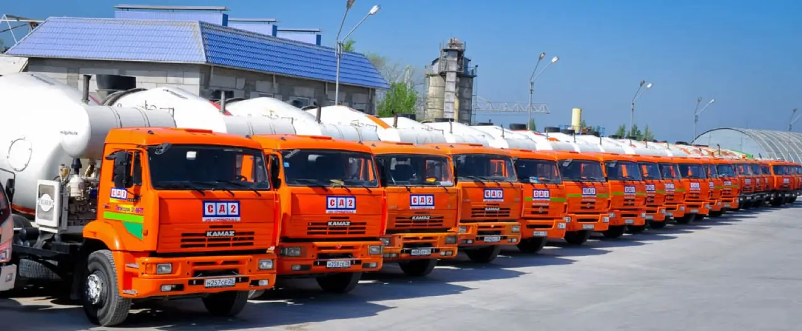
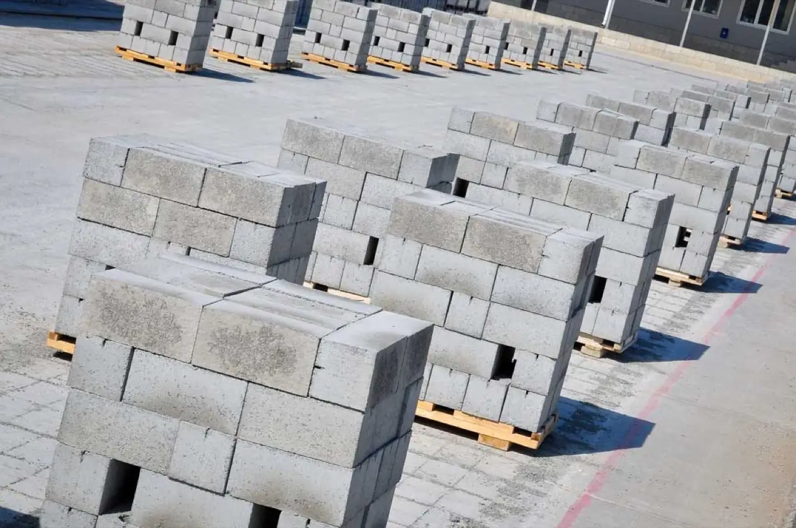
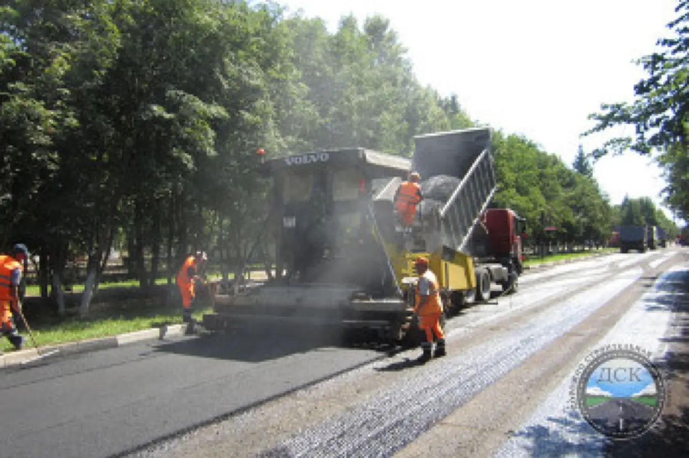

Продукция
Что мы производим
Полный цикл строительных материалов из одних рук. Любая позиция — с паспортом качества и доставкой.

Товарный бетон
и растворы
Бетон марок М100–М1000, кладочные и штукатурные растворы. Мелкозернистый, керамзитобетон, торкрет.
Прайс и характеристики →
ЖБИ —
293 позиции
Плиты перекрытий, блоки ФБС, стеновые блоки, лестничные марши. Производство — линия ZENITH, 3 млн блоков в год.
Каталог и прайс →
Асфальтобетон
Горячие смеси по ГОСТ 9128, типы Б и Г. Поставка с соблюдением температуры на объект.
Условия и цены →
Тротуарная плитка,
бордюр
Вибропрессованная плитка ZENITH — 17 форм, любые цвета. Бордюр, палисад. Срок службы до 30 лет.
Каталог форм →
Дренажные лотки
Бетонные водоотводные лотки Б-6 и Б-7. ГОСТ 32955-2014, телескопический монтаж. Решётки и оголовки под заказ.
Размеры и нагрузки →
Инертные материалы
с карьера
Щебень мытый 5–20 мм, песок, отсев, ОПГС. То же сырьё, что идёт в наш бетон. От 275 ₽/т.
Прайс по фракциям →